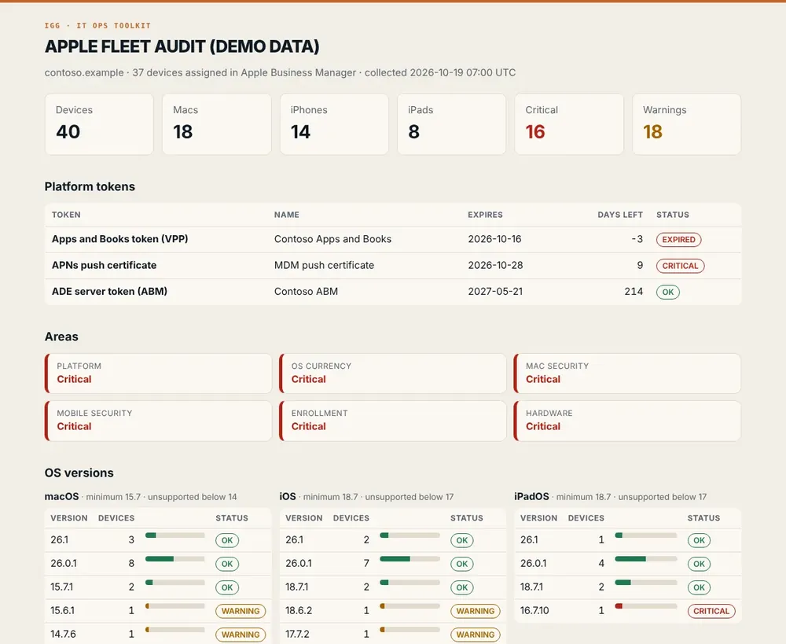

The most expensive mistakes in an Apple fleet are not on one device but in the certificate or token that stops all of them. If the APNs push certificate expires, no device gets a command; if someone creates a new one instead of renewing it, every device has to re-enroll. The weekly Jamf Pro review published with this post puts those dates first. Its demo runs on a made-up fleet of 40 devices, 18 Macs, 14 iPhones and 8 iPads, with three VIP users and faults placed on purpose.
The review reads Jamf Pro through a read-only API client whose secret comes from an environment variable.
From the ADE token to the CEO's full iPad
An expired ADE token, the one behind automated enrollment, means new laptops come out of the box unmanaged. On Macs the review looks for FileVault, Apple's disk encryption, with no recovery key in Jamf Pro, and Apple silicon Macs with no bootstrap token, so updates never install. It also flags iPhones with no passcode and laptops silent for two months.
VIP findings go up one level and get their own section, so the CEO's full iPad shows up well before the evening ahead of the board meeting. A value Jamf Pro did not collect skips the check instead of raising a false alarm.
How to use it with real data
It needs a Jamf Pro API role with read privileges only and an API client. After the export, the APNs expiry date from Settings > Global > Push certificates and the VIP list are added. The output includes a token calendar and a work list per device.
Where it comes from
It comes from managing MacBooks, iPhones and iPads with Jamf Pro and supporting VIP users and board meetings.
Want to bring it to your environment or adapt it to your case? Get in touch and we can look at it together.
Tech Career Lab · newsletter
Found this useful? Every two weeks I send one practical idea for IT professionals: LinkedIn, projects, networking and hiring processes.
Sign up and get the 33 ideas →